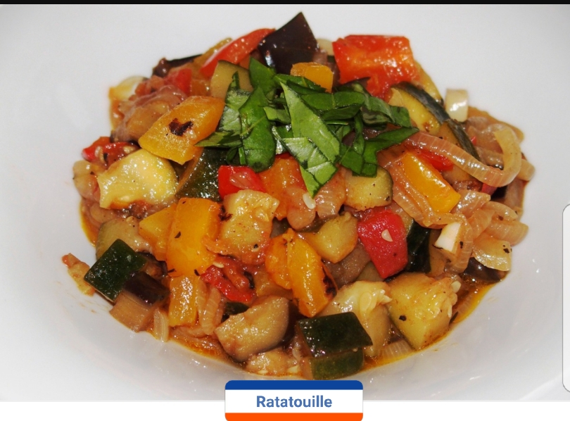
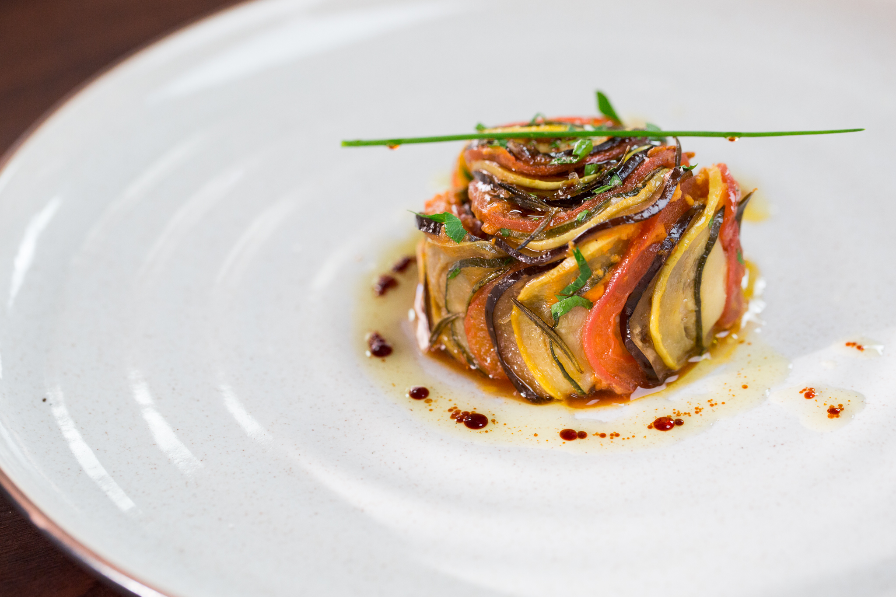

Ratatouille
C’est une spécialité culinaire de Provence et Nice en France ; dépuis du XVIII siècle. C’est un ragoût, généralement composée de légumes cuites (coupés en rondelles ou en quartiers) : aubergines, courgettes, poivrons, tomates, oignons, d’ail et de l’huile d’olive. Elle peut être également aromatisée avec des olives, thym, romarin, basilic et herbes de Provence. Si votre Ratatouille fait partie de votre plat principal, servez là chaude aussi tôt la cuisson terminée.
Une bonne ratatouille peu également se servir glacée (3 à 6°C au sortir du frigo). Elle fait alors une excellente entrée pour un déjeuné d'été. .
Au cinéma ont trouve le film Ratatouille, dans lequel le chef américaine Thomas Keller popularise une variation contemporaine, Le Confit Byaldi, du chef français Michael Guérard..
Les deux recettes, La Ratatouille Traditionnel et Le Confit Byaldi
Ratatouille
Temps de préparation : 25 minutesTemps de cuisson : 55 minutes
Ingrédients (pour 4 personnes) :
- 350 g d'aubergines
- 350 g de courgettes
- 350 g de poivrons de couleur rouge et vert
- 350 g d'oignons
- 500 g de tomates bien mûres
- 3 gousses d'ail
- 6 cuillères à soupe d'huile d'olive
- 1 brin de thym
- 1 feuille de laurier
- sel et poivre
Préparation de la recette :
Coupez les tomates pelées en quartiers, les aubergines et les courgettes en rondelles. Emincez les poivrons en lamelles et l'oignon en rouelles. Chauffez 2 cuillères à soupe d'huile dans une poêle et faites-y fondre les oignons et les poivrons. Lorsqu'ils sont tendres, ajoutez les tomates, l'ail haché, le thym et le laurier. Salez, poivrez et laissez mijoter doucement à couvert durant 45 minutes. Pendant ce temps, préparez les aubergines et les courgettes. Faites les cuire séparément dans l'huile d'olive pendant 15 minutes. Vérifiez la cuisson des légumes pour qu'ils ne soient plus fermes. Ajoutez les alors au mélange de tomates et prolongez la cuisson sur tout petit feu pendant 10 min. Salez et poivrez si besoin.
Le Confit Byaldi
Temps de préparation : 30 minutesTemps de cuisson : 40 minutes
Ingrédients (pour 6 personnes) :
- 2 courgettes
- 2 aubergines
- 6 tomates
- huile d'olive
- sel et poivre
Préparation de la recette :
Coupez les tomates pelées en quartiers, les aubergines et les courgettes en rondelles. Emincez les poivrons en lamelles et l'oignon en rouelles. Chauffez 2 cuillères à soupe d'huile dans une poêle et faites-y fondre les oignons et les poivrons. Lorsqu'ils sont tendres, ajoutez les tomates, l'ail haché, le thym et le laurier. Salez, poivrez et laissez mijoter doucement à couvert durant 45 minutes. Pendant ce temps, préparez les aubergines et les courgettes. Faites les cuire séparément dans l'huile d'olive pendant 15 minutes. Vérifiez la cuisson des légumes pour qu'ils ne soient plus fermes. Ajoutez les alors au mélange de tomates et prolongez la cuisson sur tout petit feu pendant 10 min. Salez et poivrez si besoin.
